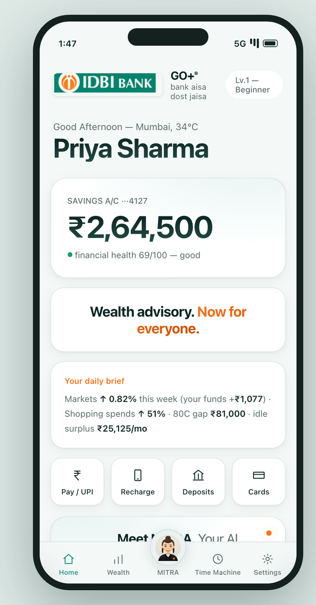
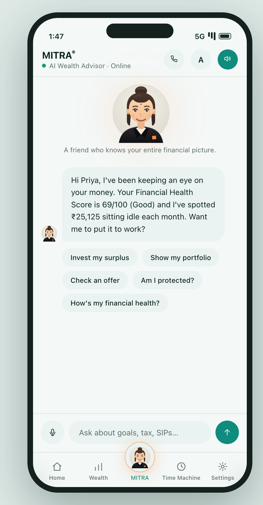
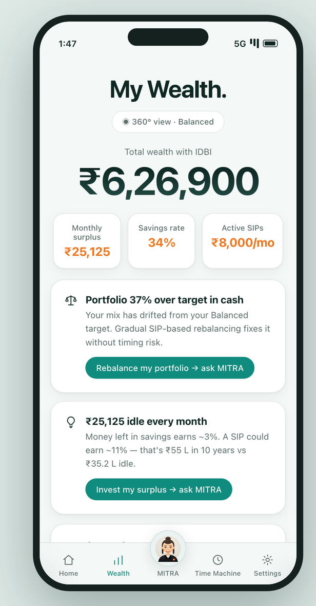
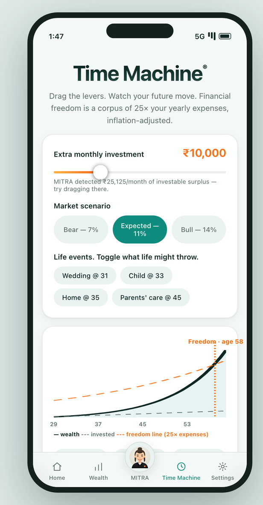

“Bank Aisa Dost Jaisa”, digitised.
MITRA (Hindi: friend) is a conversational AI advisor that turns the bank's most under-used asset — the customer's own transaction behaviour — into advice the customer actually acts on.
in the prototype
spoken & understood
all passing
wired end to end
Different, because of what we refuse to do.
- Existing robo-advisors are form-first and English-first. MITRA opens with a spoken sentence about money the customer already has.
- Generic LLM assistants hallucinate figures. Here the engine computes; the model only routes to an allow-listed tool.
- Aggregator apps read balances. MITRA reads behaviour — six months of debits, credits and cadence.
- A 3D talking-head avatar with a 2D fallback, not a text box with a send button.
- Idle surplus detected from salary-credit and spend cadence, not from a form.
- Spend anomalies measured against a rolling three-month baseline.
- 80C gap, drift, protection gap and goal shortfalls computed monthly.
- Each finding becomes a nudge — in the customer's language, at the moment the money is actually free.
- Reaches the 98% of customers a human RM will never call, at near-zero marginal cost.
- evidence rows with field, value, source and as-of date
- the formula that produced the number
- policy version, engine mode and confidence
- action state — never EXECUTED
- a SHA-256 receipt hash-linked to the previous one
Understand → Grow → Protect → Act
Twenty-three platform capabilities, all working in the prototype. Change one number in the underlying data and every score, nudge, projection and recommendation below changes with it.
- 360° behavioural insights — idle surplus, spend spikes vs 3-month baseline, subscription leakage, 80C gap
- Financial Health Score — 0–100 across savings, emergency cover, diversification, goal readiness
- Money Persona — discipline, consistency, indulgence and protection scored from six months of data
- Peer benchmarking — percentile bars against an anonymised cohort
- Market Pulse — the weekly index move translated into your portfolio impact in ₹
- Wealth Time Machine — drag extra-SIP and bear/base/bull levers, watch the age of financial freedom move live
- Life events — wedding, child, home, parents' care reshape the curve and the freedom age
- Round-Up investing — sweeps UPI spare change into a liquid fund
- Goal-based planning — real SIP mathematics per goal, risk-profiled model portfolios
- Drift detection — fixes allocation drift via SIP glide path, no tax-triggering sells
- Prepay vs invest — amortisation-level, risk-adjusted answer
- Fraud Shield — any “guaranteed 30%” offer gets a SEBI/RBI-based five-point scam check
- Protection Gap — term and health adequacy against the 15× income rule
- Portfolio X-Ray — finds Regular-plan commission drag and fund overlap
- LTCG harvesting — models the exemption with eligibility and exit-load warnings
- Goal Collision triage — when all goals together exceed capacity, MITRA says so and prioritises
- Advice Passport — evidence, formula, data date, confidence, policy version and receipt on every recommendation
- Money Rules — IFTTT-for-money: salary-day auto-invest, sweep-to-FD, budget alerts, SIP step-up
- Wealth XP — good behaviour earns levels, Smart Saver → Wealth Pro
- Human RM handoff — prepares a reviewable brief and states plainly that no callback is booked
Voice is the access mechanism, not a garnish.
The mandate is reaching customers who aren't served today. Those customers don't type English.
- Bulbul v3 (TTS) — a genuine Indian voice in English, Hindi, Tamil, Telugu, Bengali, Marathi, Gujarati, Kannada and Malayalam, on every device. Most phones ship no Tamil, Telugu, Kannada or Malayalam voice at all.
- Saaras v3 (STT) — transcribes the mic and identifies the language itself (0.99 confidence in testing). The customer never picks a language from a menu; they just talk.
- Mayura (translation) — question in, English out, deterministic engine computes, answer translated back in modern-colloquial mode.
- Hands-free live call — MITRA speaks, listens, detects end-of-turn from the waveform, and answers, with live captions.
- Structured tool routing — the model must select one allow-listed tool with schema-validated arguments
- Offer X-Ray — paste any WhatsApp forward or scheme pitch, get Safe/Caution/Avoid with red flags and hidden costs
- Natural-language goals — “I want a MacBook next year” → schema-validated amount and timeframe → policy-based SIP simulation
From raw ledger to defensible advice
Inside the GO Mobile+ shell
MITRA is designed as a tab in the bank's existing app, not a separate destination — the advisor sits where the customer already checks their balance.


A deterministic spine with an AI sidecar
Consent → statement → advice → receipt
Deployed in ap-south-1, and nowhere else
Mumbai primary, Hyderabad DR. RBI's 2018 storage directive plus DPDP-era guidance keep every bucket, table and backup inside India — no cross-region replication leaves the country.
Boring where it counts, sharp where it differentiates
| Layer | Built with | Why this choice |
|---|---|---|
| Front end | React 18 · Vite 5 | 25 components, hand-rolled SVG charts — no charting dependency to audit or licence |
| Advice engine | Pure JavaScript, 26 modules | Deterministic and portable; the same code runs in the browser today and in Lambda tomorrow |
| API | Node (node:http), 16 routes | Zero framework dependencies in the path that touches customer data |
| Integrity | node:crypto SHA-256 | Hash-linked receipt chain over a stable JSON serialisation |
| Voice | Sarvam AI — Bulbul v3, Saaras v3, Mayura | The only practical route to Tamil, Telugu, Kannada and Malayalam speech on ordinary phones |
| Avatar | Animated SVG + GLB talking head | 3D where the device allows, 2D fallback everywhere else |
| LLM | DeepSeek Flash (prototype) → Amazon Bedrock | Routing only, schema-validated; Bedrock moves the key server-side and adds Guardrails |
| Bank data | IDBI sandbox gateway · FinPro / AA | 11 routes wired, with strict reference validation on every import |
| Tests | node:test — 17 files, 134 tests | Contract, integration, regression, speech and trust-layer coverage; no test framework dependency |
| Target cloud | AWS ap-south-1 — CDK (TypeScript) | Infrastructure as code; CI/CD via GitHub Actions with OIDC, no long-lived keys |
- npm run dev — app + API
- npm run dev:sandbox — with the live IDBI gateway
- npm test — 134 tests, ~10s
- npm run verify:idbi — replays every published sandbox scenario and regenerates the audit
A sandbox that costs less than one RM's phone bill
| Service | Monthly (USD) | Note |
|---|---|---|
| Lambda + API Gateway | $5 – 15 | Zero idle cost between demos |
| DynamoDB on-demand + PITR | $5 – 10 | Customer-scoped access patterns |
| Aurora Serverless v2 | $45 – 90 | 0.5 ACU floor, ~8h/day active |
| S3 + Textract | $10 – 20 | ≈500 statement pages/month |
| Bedrock (Sonnet + Haiku mix) | $40 – 120 | ≈2,000 conversations/month |
| CloudFront + WAF | $15 – 25 | Managed rules, India geo-restriction |
| KMS, Secrets Mgr, CloudWatch, X-Ray | $15 – 25 | Per-environment CMK |
| Total | ≈ $135 – 305 | Aurora and Bedrock dominate |
- Phase 0 — server-side engine extraction, contract tests, no AWS spend
- Phase 1 — CDK landing zone, Cognito, DynamoDB, first Lambdas
- Phase 2 — AA integration, Step Functions ingest, Bedrock + Guardrails
Every figure on these screens is computed, not written


Measured, and reproducible on your machine
134 pass · 0 fail
wall-clock
- Contract — IDBI request/response shape, enrichment mapping, loan and lien joins
- Integration — API routes, customer context, client state, data-coverage flows
- Regression — statement import, connect UI, trust layer
- Speech — motion, playback, transcript, pacing
- Conversation — intent routing, avatar direction, presenter integration
| Published YAML specs downloaded | 34 |
| Distinct test routes exercised | 31 |
| Published request scenarios sent | 45 |
| Returned HTTP 200 with parseable JSON | 41 |
| Returned HTTP 400 (documented causes) | 4 |
| Routes with at least one HTTP 200 | 30 |
| Routes wired into the product | 11 |
What is real, and what we refuse to claim
A wealth advisor that overstates itself is a compliance incident waiting to happen. This is the boundary, stated the same way in the product, the repository and this deck.
- 11 IDBI sandbox routes called server-side, live, with request IDs captured
- Consent handle and encrypted redirect obtained from FinPro and bound to the authenticated MITRA session
- Statement normalisation with strict link-reference validation and pagination cursor handling
- Every analytic computed from the returned data — change an input, every output changes
- Hash-linked advice receipts issued and verifiable through the API
- Nine-language voice in and out, with automatic language identification
- 134 automated tests, all passing, reproducible in about ten seconds
- No execution, ever — no mandate, trade, policy issuance, cancellation or RM callback is performed. The passport refuses an EXECUTED action state outright
- Loan data is inspected, not merged — the sandbox fixtures lack a verified loan-to-customer join, so loan terms never become profile inputs
- Multi-account consent is blocked — the published fixture returns a mismatched link reference, and the connector refuses the import rather than substituting a plausible one
- Browser-side keys are a prototype shortcut — production moves them server-side behind Bedrock and Secrets Manager
- Demo personas are synthetic and labelled as such wherever they appear
The path from prototype to production
From a convincing demo to a defensible one
The first prototype proved the idea. This phase replaced the parts that were only pretending to be real.
| Area | Before | Now |
|---|---|---|
| Bank data | Synthetic personas only | 11 IDBI sandbox routes wired — account discovery, enquiry, paginated statements, consent request, encrypted redirect, consent list, FinPro statement, lien, loan details, overdue, customer limits |
| Consent | Not implemented | Full FinPro consent flow — handle, encrypted redirect URL, active-consent selection, and refusal on pending, revoked, expired or foreign-account results |
| Data integrity | Mismatched references silently accepted | Strict link-reference validation. The connector now refuses the inconsistent published fixture instead of importing it, and the audit records the earlier over-claim |
| Enrichment | Balance only | Lien and effective-available balances kept distinct from reported balance; loans and exposure surfaced with their joins explicitly marked unresolved |
| Avatar | 2D animated SVG | 3D talking-head avatar with viseme lip-sync and a 2D/3D toggle in Settings — merged to main this phase |
| Voice | Fixed delivery rate | Speaking-speed control, plus motion and pacing regression tests |
| Conversation | Chat panel | Interactive companion rail and full-screen live call with hands-free turn-taking and live captions |
| Verification | No automated tests | 134 tests across 17 files, all passing — contract, integration, regression, speech and trust-layer |
See it, run it, read it
npm run dev # → localhost:5173
npm run dev:sandbox # with live IDBI gateway
- IDBI_SANDBOX_AUDIT.md — every route tested, every failure and contradiction recorded
- SANDBOX_REQUIREMENTS.md — the full AWS target architecture, security requirements and cost model
- API_CONTRACT.md + openapi.yaml — the interface the bank would integrate against
- DATA_AUDIT.md — what data exists today and where it comes from
- VERIFICATION.md — verified coverage, fixes and remaining limits